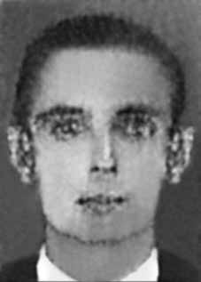

Luiz
Carlos
Augusto
CIRCUNSTÂNCIAS DA MORTE
Luiz Carlos Augusto morreu no dia 23 de outubro de 1968, depois de ter sido atingido por disparo de arma de fogo no centro do Rio de Janeiro. Naquele dia, estudantes e jornalistas protestavam contra a morte de Luiz Paulo Cruz Nunes, que aconteceu na véspera, durante um ataque realizado por agentes do Departamento de Ordem Política e Social (DOPS-GB) e da Polícia Militar (PM-GB) à Faculdade de Ciências Médicas da Universidade do Estado da Guanabara e ao Hospital Pedro Ernesto, localizados no bairro de Vila Isabel, no Rio de Janeiro. A repressão policial contra os manifestantes começou na esquina entre as Rua de Santana e a Avenida Presidente Vargas, depois de estudantes apedrejarem o prédio do jornal O Globo. De acordo com reportagem do jornal Correio da Manhã, o capitão Salatiel, que auxiliava o responsável pela operação, coronel Hernani, ordenou aos seus comandados que atirassem na direção de repórteres e fotógrafos que registravam os acontecimentos. Durante aproximadamente 15 minutos, os policiais atiraram contra os manifestantes que, apesar disso, não se dispersaram completamente. Nesse instante, Luiz Carlos estava na empresa em que trabalhava, com seus colegas. Ao ouvir os barulhos vindos da rua, foi até a janela verificar o que se passava, quando foi atingido por um tiro que partiu do jipe do comando da PM, que estava na Avenida Presidente Vargas. Consta do auto de exame cadavérico que a morte ocorreu em função do emprego de arma de fogo. A certidão de óbito, por sua vez, declara que a causa da morte de Luiz Carlos foi “ferimento transfixante do abdômen e penetrante do tórax e com lesão do fígado e estômago e perfuração do estômago. Hemorragia intestinal”. A CEMDP indeferiu, em 15 de maio de 1997, o pedido apresentado pela família de Luiz Carlos com a alegação de que não havia elementos que comprovassem que as ruas da cidade onde ocorreram os fatos tenham se transformado em “dependência policial assemelhada”. Em função de promulgação da Lei n o 10.875/2004 e a correspondente ampliação do escopo da legislação anterior, o caso é levado novamente em consideração, sendo deferido em 15 de dezembro de 2004 e publicado no Diário Oficial da União em 27 de dezembro de 2004. Os restos mortais de Luiz Carlos Augusto foram enterrados no cemitério São Francisco Xavier, no Rio de Janeiro.
Luiz Carlos Augusto died on October 23, 1968, after being hit by a gunshot in the center of Rio de Janeiro. That day, students and journalists were protesting against the death of Luiz Paulo Cruz Nunes, which occurred the day before, during an attack carried out by agents from the Department of Political and Social Order (DOPS-GB) and the Military Police (PM-GB) on the Faculty of Medical Sciences of the State University of Guanabara and the Pedro Ernesto Hospital, located in the Vila Isabel neighborhood, in Rio de Janeiro. Police repression against protesters began on the corner of Rua de Santana and Avenida Presidente Vargas, after students stoned the building of the newspaper O Globo. According to a report in the Correio da Manhã newspaper, Captain Salatiel, who was assisting the person responsible for the operation, Colonel Hernani, ordered his men to shoot in the direction of reporters and photographers who were recording the events. For approximately 15 minutes, the police shot at the protesters who, despite this, did not disperse completely. At that moment, Luiz Carlos was at the company he worked for, with his colleagues. Upon hearing the noises coming from the street, he went to the window to check what was going on, when he was hit by a shot that came from the PM command's jeep, which was on Avenida Presidente Vargas. It is stated in the cadaveric examination report that the death occurred as a result of the use of a firearm. The death certificate, in turn, states that the cause of Luiz Carlos' death was "a transfixing wound to the abdomen and a penetrating wound to the chest, with damage to the liver and stomach and perforation of the stomach. Intestinal hemorrhage." CEMDP rejected, on May 15, 1997, the request presented by Luiz Carlos' family with the allegation that there were no elements to prove that the streets of the city where the events occurred had been transformed into a “similar police facility”. Due to the promulgation of Law No. 10,875/2004 and the corresponding expansion of the scope of the previous legislation, the case was taken into consideration again, being approved on December 15, 2004 and published in the Official Gazette of the Union on December 27, 2004. The mortal remains of Luiz Carlos Augusto were buried in the São Francisco Xavier cemetery, in Rio de Janeiro.
Luiz Carlos Augusto murió el 23 de octubre de 1968, tras ser alcanzado por un disparo en el centro de Río de Janeiro. Ese día, estudiantes y periodistas protestaban por la muerte de Luiz Paulo Cruz Nunes, ocurrida la víspera, durante un ataque perpetrado por agentes del Departamento de Orden Político y Social (DOPS-GB) y de la Policía Militar (PM-GB) a la Facultad de Ciencias Médicas de la Universidad Estadual de Guanabara y al Hospital Pedro Ernesto, ubicado en el barrio Vila Isabel, en Río de Janeiro. La represión policial contra los manifestantes comenzó en la esquina de la Rua de Santana y la Avenida Presidente Vargas, luego de que estudiantes apedrearan el edificio del periódico O Globo. Según informa el diario Correio da Manhã, el capitán Salatiel, que ayudaba al responsable de la operación, coronel Hernani, ordenó a sus hombres disparar en dirección a los reporteros y fotógrafos que registraban los hechos. Durante aproximadamente 15 minutos, la policía disparó contra los manifestantes quienes, pese a ello, no se dispersaron por completo. En ese momento, Luiz Carlos se encontraba en la empresa en la que trabajaba, con sus compañeros. Al escuchar los ruidos provenientes de la calle, se acercó a la ventana para comprobar qué pasaba, cuando fue alcanzado por un disparo que provenía del jeep del comando de la PM, que se encontraba en la Avenida Presidente Vargas. En el informe del examen cadavérico se consigna que la muerte se produjo como consecuencia del uso de arma de fuego. El certificado de defunción, a su vez, señala que la causa de la muerte de Luiz Carlos fue "una herida traspasante en el abdomen y una herida penetrante en el tórax, con daño en el hígado y el estómago y perforación del estómago. Hemorragia intestinal". El CEMDP rechazó, el 15 de mayo de 1997, la solicitud presentada por la familia de Luiz Carlos alegando que no existían elementos que acreditaran que las calles de la ciudad donde ocurrieron los hechos hubieran sido transformadas en una “instalación policial similar”. Debido a la promulgación de la Ley nº 10.875/2004 y la correspondiente ampliación del alcance de la legislación anterior, el caso fue nuevamente tomado en consideración, siendo aprobado el 15 de diciembre de 2004 y publicado en el Diario Oficial de la Unión el 27 de diciembre de 2004. Los restos mortales de Luiz Carlos Augusto fueron sepultados en el cementerio de São Francisco Xavier, en Río de Janeiro.